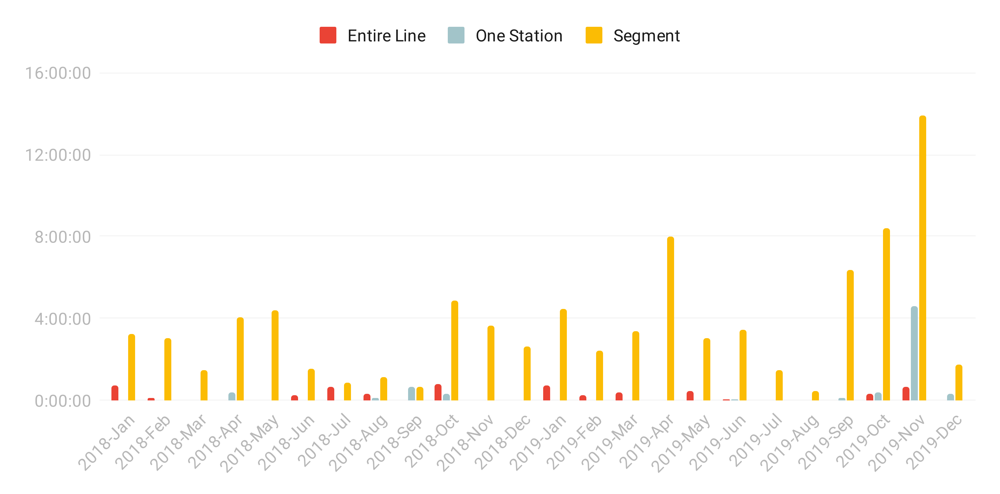

Using Twitter data to visualize service disruptions on the STM’s Orange Line
1. Introduction
Unplanned service disruptions are happening frequently on metro lines in Montreal. These disruptions can be minor, affecting a single station for a few minutes, or can paralyse an entire line, forcing commuters to find alternatives to reach their destination. By looking at the Twitter feeds of the four STM metro lines, it is possible to view the history of service disruptions and analyze their impact on the network.
For this project, I scraped the service alerts of the Orange Line on Twitter — going back to 1st January 2018 — in order to understand what are the main types of disruptions, their duration, and the sections of the metro line that were impacted.
2. Legend
2.1 Types of Service Disruptions
Equipment: train breakdown, computer system failure, electrical equipment failure
Incident: intervention of emergency services, injured or ill passenger, unauthorized person on the tracks, emergency brake activated
Smoke: presence of smoke in the station/tunnel
Water infiltration: infiltration requiring a power cut
N/A: unspecified
2.2 Impact on the line
Entire Line: line shut down between Côte-Vertu and Henri-Bourassa/Montmorency
Segment: shut down only on a segment, e.g. between Côte-Vertu and Lionel-Groulx
One Station: unplanned closing of one metro station
3. Charts
- Entire Line
- Segment
- One Station
- X axis: Date of the disruption
- Y axis: Duration of the disruption (HH:MM:SS)
- Mobile users: note that the interactive charts have been replaced by static images for compatibility reasons.
2018 — A scatter plot of all service disruptions

2019 — A scatter plot of all service disruptions

2018 & 2019 — Impact & duration per month
Number of disruptions and their impact on the line
(sum for the year, by type)
2018
2019
Total duration of disruptions and their impact on the line
(sum for the year, by type)
2018
2019
4. Overview
Blabla à propos des stats
5. Methodology & Tools
Data was scraped from the @stm_Orange Twitter handle, and includes the period from 1st January 2018 to 14th December 2019. It was done with Twint , a Twitter scraping tool that does not use Twitter’s API (no rate limitations). Graphs were created in Google Sheets.
6. Data
You can download a clean dataset with all the service disruptions here (CSV).